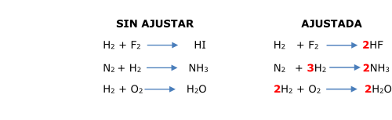
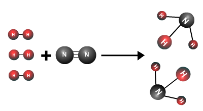

De la Alquimia a la Química: los cálculos químicos
- De la Alquímia a la Química
- I. Introducción
- 1. Las primeras leyes
- 1.1. Ley de conservación de la masa
- 1.2. Ley de las proporciones definidas o ley de Proust
- 1.3. Ley de las proporciones múltiples o ley de Dalton
- 1.4. Ley de las proporciones reciprocas o ley de Richter
- 1.5. Ley de los volúmenes de combinación o ley de Gay-Lussac
- 1.6. Modelo atómico de Dalton
- 1.7. ¿Qué he aprendido?
- 2. La cantidad de sustancia
- 3. Leyes de los gases
- 4. Mezclas y disoluciones
- 5. Las reacciones químicas
- 6. Ejercicios
- Créditos
5.1.1. Ajuste por tanteo
Objetivos
Si las reacciones son sencillas, es fácil añadir el coeficiente estequiométrico a “simple vista”.


Elaboración propia.
|
“El número de átomos de cada elemento tiene que ser igual en los reactivos y en los productos". Advertencia: en el ajuste nunca pueden cambiarse los subíndices de las fórmulas de reactivos o productos . |
Caso práctico
Obra publicada con Licencia Creative Commons Reconocimiento Compartir igual 4.0